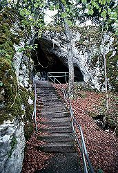

| In Deutsch |
| In Deutsch |
Kolbinger Höhle - Stephanshöhle
Cave of Kolbingen - Stephan's Cave
Useful Information
 |
| Image: The cave of Kolbingen lies on a cliff above the Danube valley near Fridingen. |
| Location: | A81 exit Rottweil, B14 to Tuttlingen or exit Tuningen, B253 to Tuttlingen. Kolbingen lies 15km NE Tuttlingen über Mühlheim a.d. Donau. 2,5km SE Kolbingen, follow Oberdorfstraße and Höhlenweg, signposted from Kolbingen. (73,Lf60) |
| Open: | MAR-OCT Sat 13-17, Sun 10-17. [2004] |
| Fee: | Adults EUR 2, Children (6-16) EUR 1, members of the Albverein EUR 1.50. Groups (+): Adults EUR 1.50. [2004] |
| Classification: |
|
| Light: | electric |
| Dimension: | L=200m, 800m asl GR: L=10m, B=10m, H=4m. |
| Guided tours: | L=88m, 141 Steps, D=20min, V=5,000/a [2005]. |
| Photography: | |
| Accessibility: | |
| Bibliography: |
Thomas Rathgeber (1995):
Neue Präsentation der Kolbinger Höhle,
Laichinger Höhlenfreund, 30(1), S. 25-36, 3 Abb, 3 Tab., Laichingen 1995
( Anon (o.J.): Vom Naturdenkmal Kolbinger Höhle, Faltblatt ( |
| Address: |
Gemeinde Kolbingen, Hauptstraße 3, 78600 Kolbingen, Tel: +49-7463-97083.
E-mail: |
| As far as we know this information was accurate when it was published (see years in brackets), but may have changed since then. Please check rates and details directly with the companies in question if you need more recent info. | |
| Last update: | $Date: 2015/11/20 13:16:56 $ |
History
|  |
| Image: the lower exit of the through cave. Steps lead to the main cave. |
| 19th century | used as a hideout by a thief named Stephan. | |
| 1879 | mentioned as der hohle Felsen im Einschlag in the Beschreibung des Oberamts Tuttlingen by Karl Eduard Paulus. | |
| 1899 | Pastor Karl Beer discovers remains of animals, some of them from the brown bear (Ursus arctos). | |
| 1908 | several cave visits for the exploration of the pothole. Wilhelm Otto Dietrich finds more brown bear bones. | |
| 1908 | discovery of the Nebenhalle. | |
| 1913 | discovery of the continuation and development of the entrance, installation of gas light. | |
| 1914 | the planned administration by the Schwäbischer Albverein fails, cave closed. | |
| 1916 | damages in the cave mentioned. | |
| 1920 | administration by the Schwäbischer Albverein. | |
| 1926 | congress of the VdHK at Kolbingen, new survey of the cave. | |
| 1927 | cave map and description by Walter Biese publishe in the Mitteilungen. | |
| 1933 | wooden bridge installed in the Stephansdom. | |
| 1950 | installation of a provisory electric light powered by a generator. | |
| 1958 | cave closed because of unstable installations (paths, wooden bridge). | |
| 1965 | first plans to refurbish the cave by the Albverein. Consultation of Helmut Frank from Laichingen. | |
| 1968 | new development and electric light, reopened. | |
| 1971 | congress of the VdHK at Kolbingen. | |
| 1975 | exploration and new survey by the Arge Höhle und Karst Stuttgart. | |
| 1986 | 75th anniversary of the Ortsgruppe Kolbingen of the Schwäbischer Albverein. Höhlenausstellung. | |
| 1995 | addition of an information table at the cave entrance. |
Description
 |
| Image: the path to the cave entrance crosses a through cave, maybe another part of the same cave system. |
 |
| Image: this rock is balancing between the cavern walls. The story goes that it will fall down, if someone tells a lie under it. |
The most impressive part of the Kolbinger Höhle (Cave of Kolbingen)is the entrance. From the entrance building the path crosses a cave ruin. The other end opens to the valley of the Danube. From here a path along the slope leads to the cave entrance.
The old name of this cave, Stephanshöhle (Stephan's Cave), is based on an old tale about a scallywag and a thief called Stephan, who used the cave as a hideout. The entrance he used is the natural entrance in the first hall and is shown on the tour.
After the first developement of the cave in 1913 the neigbouring towns Fridingen and Kolbingen started to quarrel. The entrance of the cave is located on grounds belonging to Fridingen but the cave itself is on the grounds belonging to Kolbingen. So the Schwäbischer Albverein (Hauptverein), a society for the protection and development of the Swabian Jura (Schwäbische Alb), took over the administration cave as an independent institution.
The cave has several formations, which are remarkable because of the pure whiteness. A stalagmite in the second chamber is as thick as an arm and nearly reaches the ceiling.
 |
| Image Gallery |
 Search Google for "Kolbinger Höhle"
Search Google for "Kolbinger Höhle" Google Earth Placemark
Google Earth Placemark Kolbinger Höhle - Wikipedia
(
Kolbinger Höhle - Wikipedia
( Ab in den Untergrund
(
Ab in den Untergrund
(